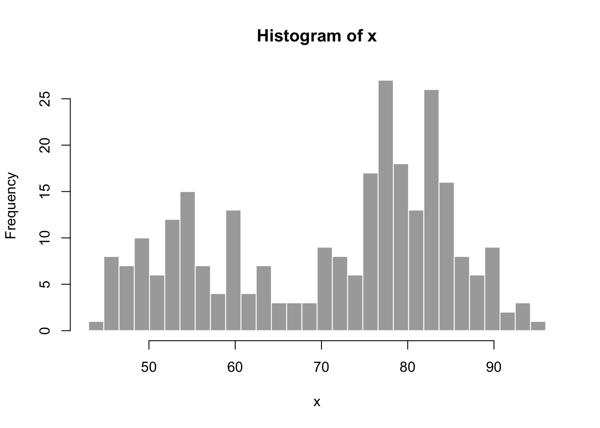
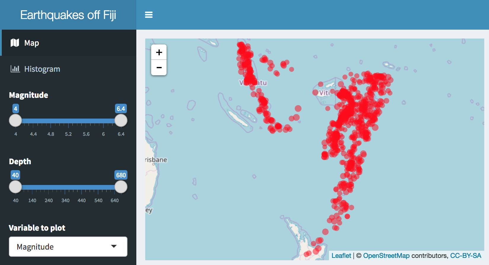
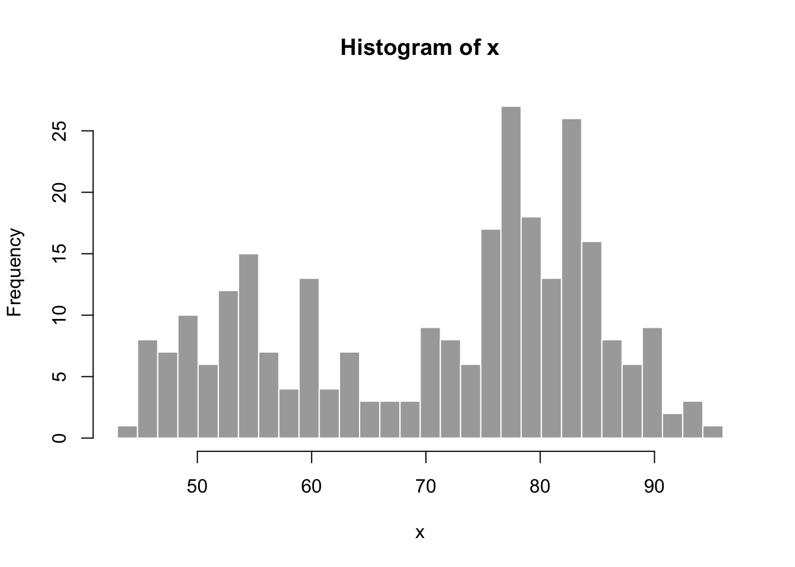
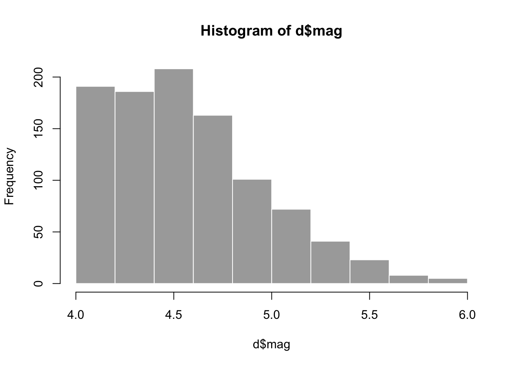
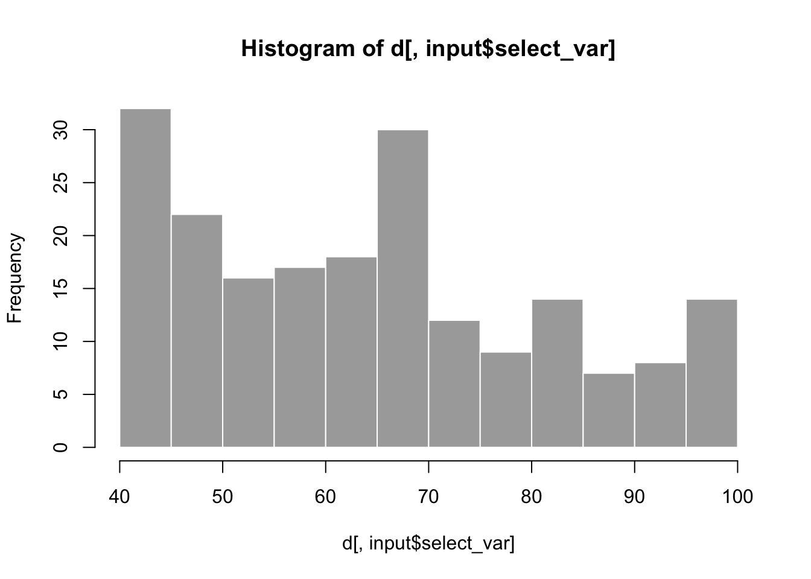

Code
input = list(bins = 30)
x <- faithful[, 2]
bins <- seq(min(x), max(x), length.out = input$bins + 1)
hist(x, breaks = bins, col = 'darkgray', border = 'white')
Here’s a presentation to accompany these introductory materials:
Creating Interactive Web Applications with R & Shiny
Numbered folders in this repository correspond with iterative development and enhancement of a Shiny app:
01_faithful: default app from using RStudio, File > New File > Shiny Web App… 
02_quakes_mag: swap to quakes dataset, adjust histogram by magnitude03_quakes_depth: add depth slider, select box for variable to histogram04_quakes_map: add leaflet map05_quakes_dashboard: enhance ui with shinydashboard The latest versions of R and RStudio are highly recommended to follow along.
The following sections in this Rmarkdown document demonstrate how you can develop output visualizations for use in a Shiny app, especially by defining input variables as a list (input$*). Knitting this Rmarkdown document docs/index.Rmd to docs/index.html in this repo and pushing to Github then allows the HTML to be viewable at https://bbest.github.io/shiny-intro (using the Github Pages feature). In contrast, note that Github and most web hosting services can not host a Shiny app. Although the leaflet and plotly visualizations in this document are interactive in the web browser, they do not require the Shiny library or a Shiny server to be displayed. Rather, the HTML output can be easily hosted on the most basic web server or passed as an email attachment. The Shiny context allows for ultimate flexibility with user interactions, but may be overkill for basic visualization. Check out all the amazing htmlwidgets.org and framework that works in the three contexts of: 1) RStudio, 2) Rmarkdown, and 3) Shiny.
To run locally, first download the repository of files here:
(Or use git clone https://github.com/bbest/shiny-intro.git.) Then unzip and launch RStudio into that working directory by double-clicking on the shiny-intro.Rproj file.
01_faithfulCode: 01_faithful
Run from GitHub:
shiny::runGitHub("bbest/shiny-intro", subdir="01_faithful")Run locally:
shiny::runApp("01_faithful")In order to quickly experiment with visualization, we could pull the code from within the rendering function of the Shiny app and set the input list values that would otherwise be set from the user interface…
input = list(bins = 30)
x <- faithful[, 2]
bins <- seq(min(x), max(x), length.out = input$bins + 1)
hist(x, breaks = bins, col = 'darkgray', border = 'white')
02_quakes_maglibrary(tidyverse)
input <- list(slider_mag = c(4, 6))
d <- quakes %>%
filter(
mag >= input$slider_mag[1],
mag <= input$slider_mag[2])
hist(d$mag, col = 'darkgray', border = 'white')
Code: 02_quakes_mag
Run from GitHub:
shiny::runGitHub("bbest/shiny-intro", subdir="02_quakes_mag")Run locally:
shiny::runApp("02_quakes_mag")03_quakes_depthlibrary(tidyverse)
input <- list(
select_var = "depth",
slider_mag = c(4, 5),
slider_depth = c(0, 100))
d <- quakes %>%
filter(
mag >= input$slider_mag[1],
mag <= input$slider_mag[2],
depth >= input$slider_depth[1],
depth <= input$slider_depth[2])
hist(d[,input$select_var], col = 'darkgray', border = 'white')
Code: 03_quakes_depth
Run from GitHub:
shiny::runGitHub("bbest/shiny-intro", subdir="03_quakes_depth")Run locally:
shiny::runApp("03_quakes_depth")shiny-intro/05_quakes_dashboard at master · bbest/shiny-intro
04_quakes_maplibrary(leaflet)
library(glue)
leaflet(data = quakes[1:20,]) %>%
addTiles() %>%
addCircleMarkers(
radius = ~mag, color = "red", stroke = FALSE, fillOpacity = 0.5,
popup = ~glue("<b>mag</b>: {mag}<br>depth: {depth} m"), label = ~as.character(mag))Code: 04_quakes_map
Run from GitHub:
shiny::runGitHub("bbest/shiny-intro", subdir="04_quakes_map")Run locally:
shiny::runApp("04_quakes_map")05_quakes_dashboardUse: - http://rstudio.github.io/shinydashboard - https://github.com/tidyverse/ggplot2 - https://plot.ly/ggplot2
library(tidyverse)
library(glue)
input <- list(
select_var = "depth",
slider_mag = c(4, 5),
slider_depth = c(0, 100))
get_df <- function(){
df <- quakes %>%
filter(
mag >= input$slider_mag[1],
mag <= input$slider_mag[2],
depth >= input$slider_depth[1],
depth <= input$slider_depth[2])
df$var <- df[[input$select_var]]
df
}
df <- get_df()
bin_width <- min(c(7, length(unique(df$var))))
g <- ggplot(df, aes(var)) +
geom_histogram(binwidth=bin_width)
plotly::ggplotly(g)Code: 05_quakes_dashboard
Run from GitHub:
shiny::runGitHub("bbest/shiny-intro", subdir="05_quakes_dashboard")Run locally:
shiny::runApp("05_quakes_dashboard")View app directly: https://bdbest.shinyapps.io/05_quakes_dashboard
library(crosstalk)
library(leaflet)
library(DT)
# Wrap data frame in SharedData
sd <- SharedData$new(quakes[sample(nrow(quakes), 100),])
# Create a filter input
filter_slider("mag", "Magnitude", sd, column=~mag, step=0.1, width=250)# Use SharedData like a dataframe with Crosstalk-enabled widgets
bscols(
leaflet(sd) %>%
addTiles() %>%
addMarkers(),
datatable(
sd, extensions="Scroller", style="bootstrap", class="compact", width="100%",
options=list(deferRender=TRUE, scrollY=300, scroller=TRUE)))